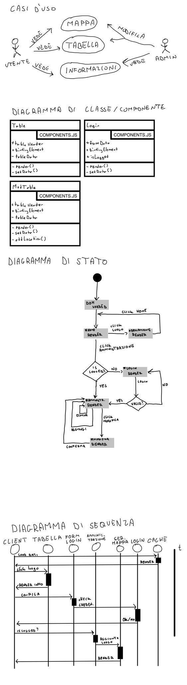

Documentation
Victorian Age
The aim of this project is to introduce places from the Victorian era with pictures and short descriptions. The places are marked on a map of England to show where they are geographically located.
- Class/Year: 5BInf - 24/25
- Author: Mariani Nicolò, Pizzonia Nicolò, Fassina Raffaele
- Created: 16 december 2024
- Last modified: 6 January 2025
Information architecture
Qui va inserito un diagramma che rappresenta la struttura delle informazioni del progetto.
UML

Project contents
| The Opium Wars were two conflicts, from 1839 to 1842 and 1856 to 1860, that was the Chinese Empire against the United Kingdom, whose military and commercial interests in the region had been placed under the control of the British East India Company. Started by British commercial penetration, which had opened the Chinese market to opium from the Anglo-Indian Empire, China tightened its prohibitions on the drug. |  |
||
| In Victorian London there was a problem of child exploitation and wage inequality. Child workers were hired at the age of eight or nine and were forced to work in difficult conditions both hygienically and in a more strictly working sense, since they worked up to twelve hours a day, sometimes at night and almost always on holidays. |  |
 |
 |
| In coal mines, children began working at age five and generally died before they were 25. Many children (and adults) worked 16 hours a day. In 1802 and 1819, the Factory Acts limited working hours to 12 hours in factories and cotton mills. The brutal conditions led to disease and health problems that dramatically reduced life expectancy. |  |
||
| Osborne House, located on the Island of Wight, is one of the royal residences that still allow us to dive into British history. This architectural jewel, in fact, was the favorite summer residence of Queen Victoria and Prince Albert, a place of serenity away from the frenzy of London. |  |
 |
 |
| To talk about the luxury neighborhoods in London, you can only start from South Kensington, which is located west of the center and is famous for being one of the symbolic areas of London's nobility. South Kensington is also called the "Royal district", Queen Victoria was born in Kensington Palace and in this, the most elegant area of London, you can find the most luxurious homes and the most exclusive streets such as Kensington Road, with its buildings in typical English style, from Georgian to Victorian architecture. In Kensington you can also find Notting Hill, one of the trendiest neighborhoods for a long time. Mayfair is also not only a prestigious area of London but one of the symbolic neighborhoods of London's luxury. Here, in addition to the elegant homes, you can find elegant squares and well kept gardens. These areas were also seen as "safe" areas where you could walk around without worries. |  |
 |
|
| The poorest areas of the London slums were located in East London. These neighborhoods were called dark London for various reasons: the lighting was poor or absent, the buildings were tall and in a dilapidated condition, the streets were narrow, crowded with people, objects and clothes hanging out to dry. In addition to the East area, the slums extended into central London: they were the St. Giles and Clerkenwell neighborhoods, the “Devil’s Acre” near Westminster Abbey, Jacob’s Island in Bermondsey, along the south bank of the Thames, the Mint in Southwark and Pottery Lane in Notting Hill. The most famous slums in the Victorian era were probably the Whitechapel neighborhoods, where the Jack the Ripper crimes were committed. |  |
 |
|
| The Victorian era, which lasted from 1837 to 1901 during the reign of Queen Victoria, was a time of remarkable innovation and engineering achievement that forever changed the landscape of modern society. The period saw the birth of revolutionary technologies and infrastructure, typified by the construction of iconic railway systems that revolutionized transportation, such as large locomotives and extensive rail networks that connected cities and regions like never before. Among the engineering triumphs of the era were exquisite iron and glass structures, such as the Crystal Palace, designed for the Great Exhibition of 1851, which showcased the ingenuity of Victorian architects and engineers. The era also ushered in the construction of enduring civil engineering works such as Tower Bridge and the vast network of aqueducts, bridges and tunnels that transformed urban environments and facilitated commerce. Furthermore, the development of sanitation systems and public health initiatives illustrated a growing understanding of engineering as a service to society, improving life in densely populated cities. The use of materials such as steel and advances in techniques such as cantilever bridges pushed the boundaries of what was considered possible, marking the Victorian era as a pivotal moment in engineering history that laid the foundation for the modern infrastructure we rely on today. | |||
| The West End is one of the three main areas that make up London. During the Victorian period, it was considered the true heart of the city in terms of importance. It contained the historic government buildings, the most luxurious homes, the most exclusive shops and the most fashionable clubs. It was, in short, the bourgeois (and aristocratic) part of the metropolis, clean, tidy and elegant, home to gentlemen's clubs and social events of the upper class. In popular culture, the West End is in direct opposition to the East End, where the former is a symbol of progress and the latter of backwardness. |  |
||
| Strong words were reserved for the Spitalfields neighborhood by the London newspaper The Poor Man's Guardian on February 18, 1832. In the 19th century, this was the poorest and most desperate area of the East End of London, sunk into degradation due to the decline of the textile industry. At the end of the 19th century, Spitalfields boasted the highest crime rate, especially murder and prostitution, in the city, and in 1881 the police force itself denounced it as "the most dangerous area of the metropolis". The very slow recovery began only during the 20th century, and even today it remains one of the least developed neighborhoods in London. In The Mystery of Virginia Hayley Spitalfields, and in particular the surrounding neighborhoods, will be the scene of disturbing investigative investigations. |  |
||
| Located in the Westminster district, Covent Garden is one of the most famous areas of London. Founded in 1540 as a marketplace, over the centuries it became a real attraction, thanks to the construction of theaters, cafes and nightclubs (unsavory dives, at the time). Its decline became evident in the 18th century, when the city's urban boom shifted the interest of Londoners towards more "modern" destinations. Many businesses were closed or moved elsewhere, and Covent Garden survived only as a fruit and vegetable market, earning the unfortunate reputation of "Venus Square", where everything was allowed, and every type of business, legal or not, was conducted in broad daylight. The rebirth occurred in the first half of the 19th century. The "old Covent Garden" was swept away, demolished and cleaned up. In its place was built the characteristic neoclassical-style covered structure, a symbol, among other things, of popular Victorian London that is often depicted in costume films or genre works. |
Wireframes


The Project
In questa sezione vanno inserite ulteriori informazioni aggiuntive (es. credenziali) ed il link al progetto